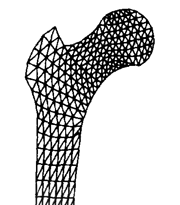
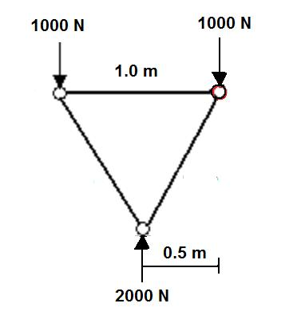
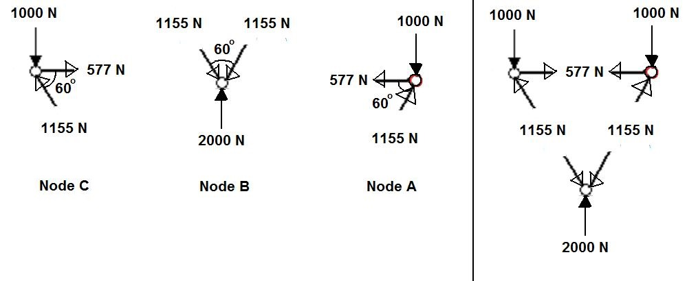
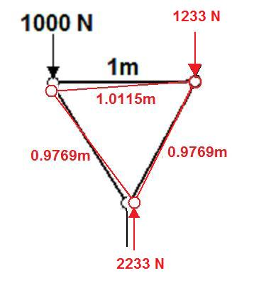
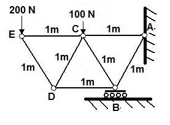
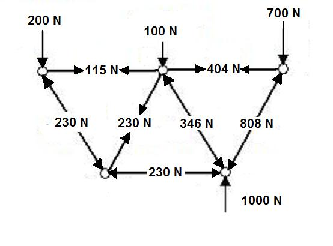
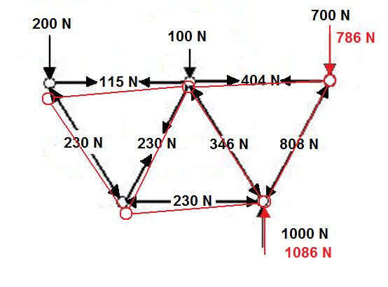
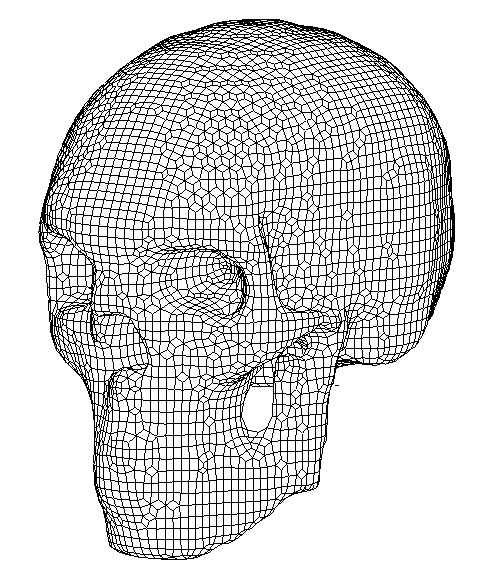
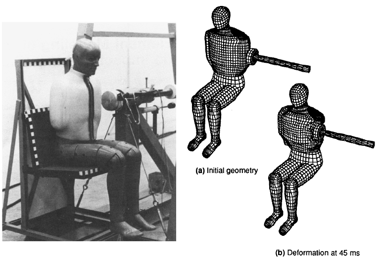

Finite Element Analysis in Biomechanics
A finite element model is a computer model that describes the physical behavior of a structure. The method works by first dividing the structure into simple parts called elements. The elements are often triangular shaped and linked together at nodes that creates a mesh and each connection has an elemental stiffness and viscosity. Considerable computing power is required to derive the behavior of structures that contain hundreds or thousands of elements using (Forward Dynamics).

The diagram to the left shows an FEA model of the proximal end of a human femur. Bones are terrific candidates for FEA models because they are anisotropic structures that behave quite differently than homogeneous materials. Unlike homogeneous materials, bone fails first in tension rather than compression and depending on the distribution of trabecular and compact bone, the response to loading and irregular shape cannot be represented by a single stress-strain relationship. There are many applications of FEA models in orthopedic biomechanics and the student who is interested in this area is encouraged to read "Computational Biomechanics of the Musculoskeletal System" edited by Ming Zhang and Yubo Fan (CRC Press, 2014).
Before we get into FEA too far, it would be wise to look at the Method of Joints to get a better understanding of how engineers determine the loads on the elements.
The purpose of this lecture is to show how FEA works in a very introductory manner.
How Does FEA Work?

Let's start by considering the structure shown to the left. It is anchored at point A, supported by rollers at point B, and has a 1000 N force applied vertically downward at point C. The first step is to create a finite element model. In this case, we can have a single triangular element with nodes at points A, B, and C and truss members connecting the three nodes. Each member has a length of one meter and we are told that members have a stiffness of 50,000 N/m which means that our structure is not a rigid body and will deform under load. We are asked to determine the amount of deformation and the reaction forces at points A and B.

Our solution begins by considering the structure to be rigid and in static equilibrium. Since the support at point B is on rollers, the reaction force has no horizontal component. In order for the structure to be in static equilibrium, the moment about A must equal zero which means that force at B must be 2000 N. In order for sum of the forces in the vertical direction to equal zero, the reaction at point A must be 1000 N downward.
Now that we know the external forces acting on the structure, we can calculate the forces of each truss member. Engineers use the method of joints and static equilibrium to determine the forces in each member. We will start at node C and find the forces in the two members needed for static equilibrium (see the figure below, left). Repeating this process for the other two nodes yields the forces in each member that would ensure static equilibrium of the structure.
Notice that when we put this information together (right), the two members with 1155 N of force are in compression and the member with 577 N of force is in tension. Engineers know that most materials can withstand greater forces in tension than in compression and could use this information to build a structure that uses a thin cable to support the 577 N tensile force like a suspension bridge.


Our solution would be correct if the members were rigid. However, we were told that they are not rigid and have a stiffness of 50,000 N/m which means that compressive and tensile force will shorten or lengthen the members and our structure will change shape. The deformation is equal to the force divided by the stiffness (Hooke's law). The top member is in tension and will increase its length by 577/50000 = 0.0115 m. The other two members are in compression and will decrease in length by 1155/50000 = 0.0231 m. Since node A is fixed and node B is on rollers, we find the new positions of nodes B and C using trigonometry (see the red structure to the right).
Our solution is still not complete because this deformed structure is no longer in static equilibrium. Node C has changed the moment arm for the 1000 N force and node B has changed the moment arm of the roller reaction force. The reaction forces would now have to be 2233 N at the roller and 1233 N at node A. Since these forces are different, we must repeat the method of joints to yield new forces in the members.
This iterative process continues until we converge on the final deformations and forces that satisfy static equilibrium. In this case, the member joining node A an B would be 0.969 m, the top member would be 1.014 m, and the member joining nodes B and C would be 0.976 m. The reaction of the roller would be 2323 N and at node A the reaction force would be 1323 N downward.

Consider the system of trusses joined together in the structure to the left with two applied loads (200 N and (100 N). If each member is 1 m long, we would use the same method as before to determine the reaction forces of the roller (1000 N) and node A (700 N). Again, we would start at the 200 N node and use the method of joints to calculate the forces in the two members assuming static equilibrium and work our way back to the first node.

It can be seen that some of the trusses are loaded in tension and some in compression and that the loads are not shared equally. If we considered the trusses not to be rigid but instead to have some elastic deformation based on the stiffness of each truss, we can see that those in tension would become longer and those in compression would become shorter. The deformation could be calculated and decisions could be made regarding the required strength and stiffness of each truss. The diagram below shows the resulting deformation if the elements are not rigid.


Obviously, it requires a lot of calculations to perform finite element analysis and this becomes very computer intensive with large meshes. The smaller the elements, the closer the FEA model reflects the actual structure but this leads to larger meshes and more calculations. Those who perform this analysis do not use the iterative approach shown above. Although it is beyond the scope of this course, real FEA analysis generates a matrix called a stress tensor which includes sizes and stiffness of each member and they use linear algebra and the the principle of virtual work. The minimization of virtual work allows the solution of the actual forces and deformations of the elements without performing many iterations. The reaction forces at points A and B are called boundary conditions. Usually, the trusses would have visco-elasticity so there would be some time dependence of the deformation that would be simulated using forward dynamics. Three dimensional structures and additional constraints like constant volume may also be necessary. As such, FEA requires sophisticated computer software and a large amount of computing power to perform the calculations and the resulting simulations.
An example of a three-dimensional human skull is shown to the right. The effect of an impact could be predicted, the strengths at various points to loads in various directions can be estimated, and it is even possible to reverse engineer the damage to estimate details of the cause of an injury. For a more complete explanation of how biomechanists generate meshes and perform finite element analyses click on this link .
The example below shows an application to occupant safety and side impact of a motor vehicle.

The automotive industry uses anthropometric test dummies (ATDs) to measure impacts to human occupants under different crash situations. FEA now allows many situations to be tested on a computer and the models can be more easily adjusted to have different properties without the need to construct many ATDs. The finite element models also do not break and can include fluid filled vessels, organs, etc. The models can also be modified to better reflect an actual human when new evidence is found regarding the mechanical properties of tissue.

The animation to the right shows how the displacement and deformations can be simulated using forward dynamics that starts with the forces and uses the inertia and visco-elastic properties of the elements to calculate accelerations and integration to get the velocities and displacements of each element.
Summary:
FEA models are complex and require a great amount of time to construct and great computing power to execute. However, they have all the advantages of forward dynamics solutions discussed in the previous lecture as well as the ability to investigate impact situations on complex structures without the need to simplify to single rigid bodies linked together at joints.